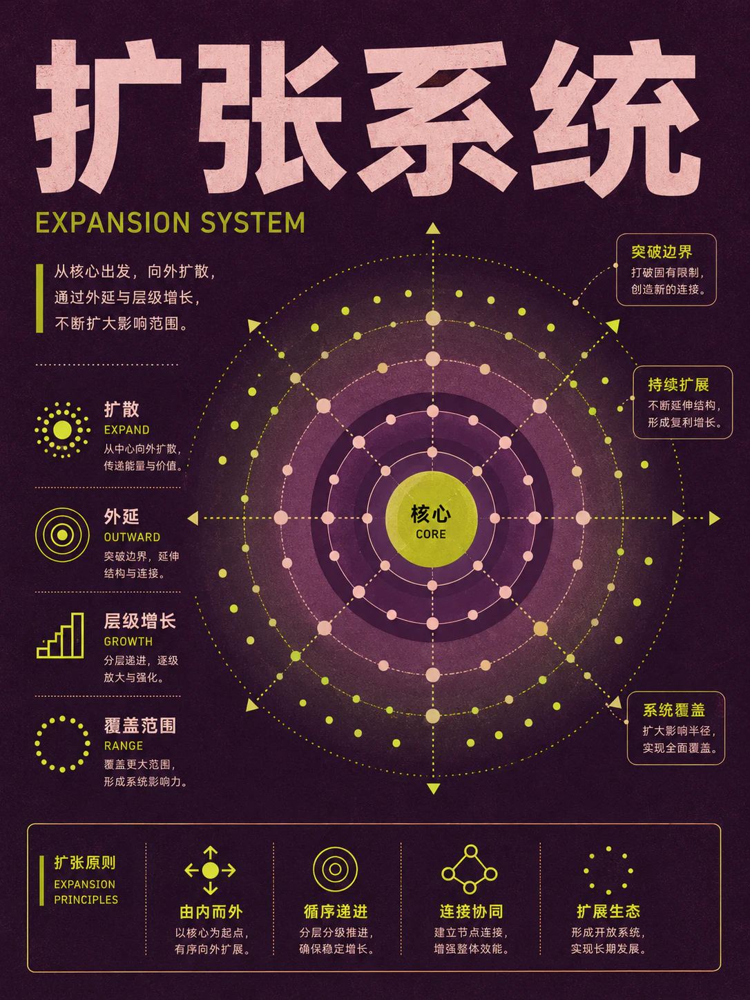

3000 字年度设计深度评论
需要读者连续读完十几个自然段，并随时回翻前文论点。
绕着圆弧读几百字就足以让人头晕，且每一圈行长都在变化，视线换行极其费力。长文老老实实用 172 网格系统 或单栏直排。
EXPANSION SYSTEM
从核心出发，向外扩散，通过外延与层级增长，不断扩大影响范围。
左右横拖画布推拉扩张倍率 · 点中心核圆放脉冲 · 点环带看单圈净空 · 方向键 ←/→/↑/↓ 与空格可操作
扩张律呈倒缩态，环带互相挤撞
越往外圈，周长增大、承载信息更多，环间净空至少应保持平稳或逐级舒展。
把扩张律切为等差或等比，向右横拖画布拉开环距。
从核心出发，向外扩散，通过外延与层级增长，不断扩大影响范围。
扩张原则
EXPANSION
PRINCIPLES
由内而外
以核心为起点，有序向外扩展。
核 23% · 扩 56%
循序递进
分层分级推进，确保稳定增长。
5 圈 · 净空 11px
连接协同
建立节点连接，增强整体效能。
0 条断连
扩展生态
形成开放系统，实现长期发展。
下弧倒立
Area Scaling & Concentric Pacing
扩张系统最容易骗过眼睛的一条几何账，是圆面积随半径的平方（r²）暴涨。就算你把四圈环宽画得一模一样，最外圈的面积也远远大于最内圈——如果外环还涂着跟核心一样重的实色，视觉重心立刻就会从圆心被抽走，整个画面变成一只「外重内虚」的空心甜甜圈。
Four Traps of Curved Baseline Typography
扩张系统属于字体组织系统，不只是画几个圆圈，更难的是把文字顺着同心圆弧排得既顺眼又好读。把一条直线文字弯到圆周上，每个字不再平行站立，而是像切蛋糕一样沿着圆心射线呈扇形张开——半径越小，字顶裂得越宽、字底挤得越狠。
From Garden Cities to Dilatational Typography
把世界画成「一圈套一圈的增长结构」，并不是平面设计师凭空发明的装饰花招，它跨越了一百多年的城市规划、现代绘画、数据可视化与字体排印教学。点选下方四个年代节点，看同一套同心语法如何演进。
Dilatational vs. Radial & Sibling Systems
新手最常把 170 扩张系统跟隔壁的 169 放射系统 混为一谈——两张图看起来都有圆心。其实区别一眼分明：放射是沿半径「射出去」，强调冲力与并列发散；扩张是沿环周「涨开来」，强调由核到层的包络与递进。下面用同一组咖啡节信息，切换三种排法对比眼睛的走法。
When Concentric Rings Hurt Readability
扩张系统极具仪式感和图解魅力，但它本质上是在跟矩形纸面、线性阅读习惯对着干。遇到下面 4 个真实设计需求，先自己判断「该不该用扩张系统」，点一下即可核对利弊与替代去处。
需要读者连续读完十几个自然段，并随时回翻前文论点。
绕着圆弧读几百字就足以让人头晕，且每一圈行长都在变化，视线换行极其费力。长文老老实实用 172 网格系统 或单栏直排。
中心放厂牌主标，三圈短词分别交代专辑名、曲目与巡演城市，信息精炼。
物理介质本身就是正圆且有声波扩散联想，文案短小、层级明确（3 环以内），正好发挥扩张系统独一无二的氛围与记忆点。
读者要横向对齐比较传感器、重量、续航与价格，一秒看出差值。
屏幕只有 390px 宽，却要把 7 个层级和上百个岗位名塞进静态圆图。
在窄屏静态图里硬塞 7 圈，单环净空会被压成不到 15px，文字全部糊成黑线；深层组织架构更适合折叠树或带缩放交互的视图。
Single-Variable Studio Critique
来做一道单变量对比小练习：下面四版「城市声景展」方形海报，文案、色板、圈数（3 环）与圆心位置完全一样，每版只动了一个扩张结构变量。挑一挑最稳、最顺读的那一版。
Original Poster & Field Index

「从核心出发，向外扩散，通过外延与层级增长，不断扩大影响范围。」
从中心向外扩散，传递能量与价值。
突破边界，延伸结构与连接。
分层递进，逐级放大与强化。
覆盖更大范围，形成系统影响力。